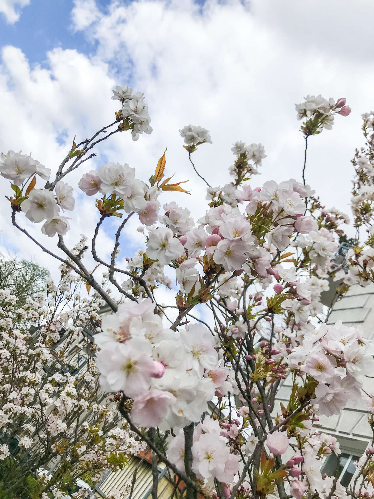

Our intellect alone won't save us
Apr 16, 2020 18:17 · 678 words · 4 minutes read

Oh the mind. It’s a blessing and a curse.
The mind is a tool well designed for certain tasks. Most of us end up trying to use it nonstop for everything.
Yes, I love the ability to zoom in on something, learn about the details and mechanics on the lowest level, and then step back again to see the whole picture. Going on a hunt to find the missing pieces of the puzzle. Making at least a little bit more sense of reality. Coming up with ideas and creations based on my knowledge and life experiences. Using my ability to reason about things to solve problems. It’s fun, it’s exhilarating, it’s what I’ve been told is the most important thing in life. It is important and crucial, but oh there is so much more that no one ever told me about.
My dear mind, I know you are here to help, but sometimes I need you to step back. Thank you. No, you don’t have to figure everything out. No, you don’t have to fix everything. No, you don’t have to spin in circles and create stories that are more hindering than useful. You don’t have to understand it all. It’s okay. Sit back and relax for a moment.
So how’s your physical body doing? Does your nervous system feel relaxed and safe or is it in fight or flight mode? Most of us carry event-based or developmental trauma in our bodies. I believe it’s crucial that we start to talk about this more. We carry wounds of abandonment, violence and terror and need to educate ourselves around how to navigate life knowing that most of us have some form of traumatic experiences stored in our cells.
And how’s your emotional body today? Did you have time to check in with yourself and feel what is there? Or are you constantly finding means to keep yourself busy? Is there fear and anxiety sitting right beneath the surface? Do you feel centered, depressed, calm, agitated, tender or heartbroken? Can you take a moment today to acknowledge what is moving you and let it be expressed through voice, breath and movement?
We’ve been faced with our shadows and it’s time that we listen. With presence and an open heart. The danger is in suppressing and denying any part of ourselves, as it will most likely come up in a moment when we cannot control it. Welcoming and accepting our deep innermost parts. All they want is to be seen and heard. If we grant them the possibility to do so, there is no need for harm. Holding ourselves and each other in what wants to move through us.
I want to see a world where we come back to our bodies. Where we allow ourselves to feel the magic and bliss of existing in the midst of all chaos. Our body is so much more than a vehicle that brings us from A to B. The way we relate to our physical form says much about our relationship to the earth. We have been exploiting our resources constantly chasing success and profit without seeing the larger picture. It is time to come back to our connection to life itself.
I want to tell you one thing. No matter where you are right now in this moment, it is okay and there is nothing to do. It’s the paradox of life. There is nothing to do and nothing to fix. There is much to remember, there is much to come back home to.
I invite you to listen closely. Listen to your body, listen to your intuition. What is it that you need? What are your boundaries? Communicate them and reach out, ask for support, ask for an open ear.
It sounds simple, but it’s something most of us have never learned to do. Take care of yourself. Be gentle with yourself and those around you. If we want anything to change, we have the power to do so. Step by step. You can do this. We’re all in this together.